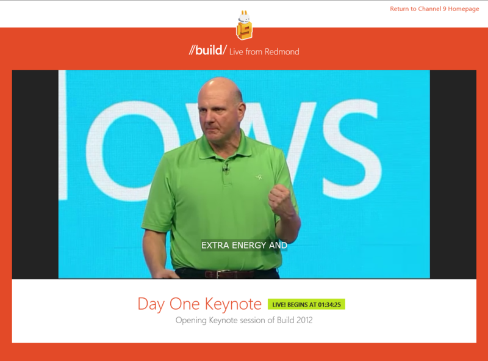
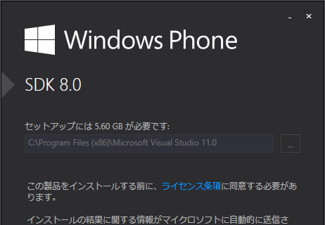
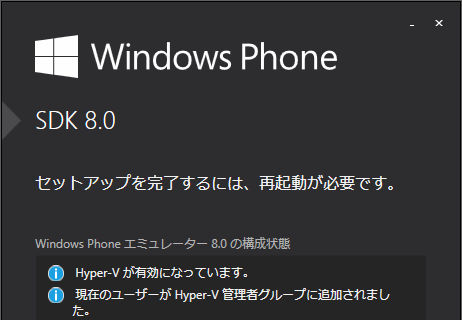
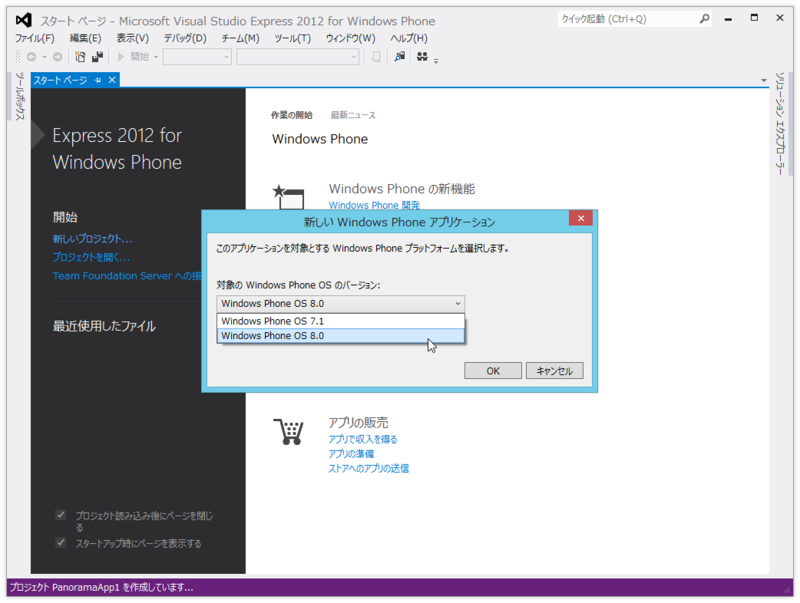
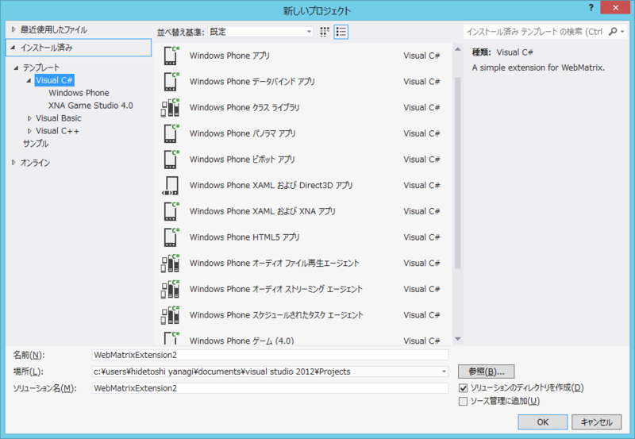
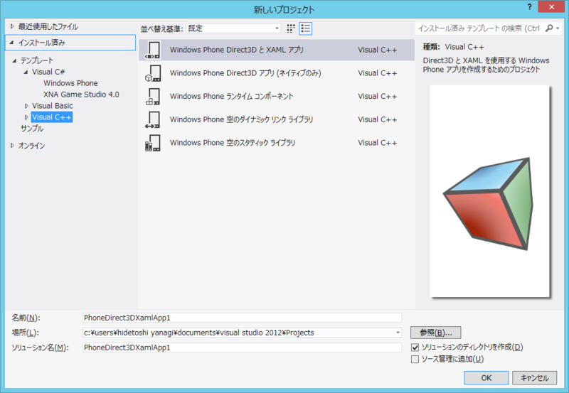
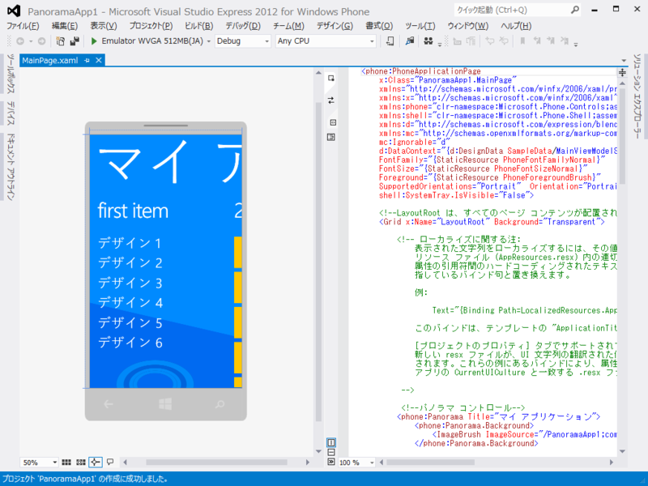
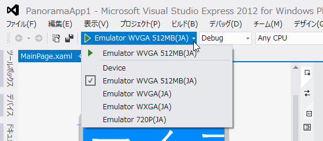
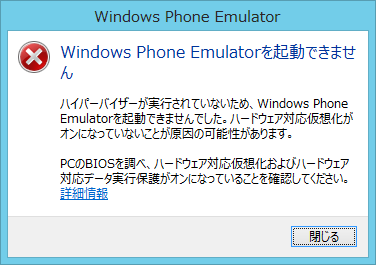

Windows Phone SDK 8.0 ━━━━(゜∀゜)━━━━ッ!!
公開日：

Build 2012 | Channel 9 を見ている。だいぶ眠いけれど、「Windows Phone SDK 8.0」がリリースされたのでダウンロードしてみた。
Windows Phone SDK 8.0 は、Windows Phone 8.0 および Windows Phone 7.5 のアプリとゲームを構築するための全機能を装備した開発環境です。Windows Phone SDK は、Windows Phone 用のスタンドアロンの Visual Studio Express 2012 エディションを提供するか、または Visual Studio 2012 Professional、Premium、Ultimate エディションのアドインとして動作します。この SDK を使用すると、既存のプログラミング スキルやコードを利用して、マネージ コードまたはネイティブ コード アプリを作成できます。さらに、この SDK には、実際の条件下で Windows Phone アプリのプロファイリングやテストを実行できる、複数のエミュレーターおよび追加のツールが含まれています。
Windows 8 は WPSDK 7.x がサポートされないので、WPSDK 8.0 を利用することになる。ちゃんと Windows Phone 7.5 のアプリも開発できる！
システム要件

64bit 版の Windows 8、Windows 8 Pro で動作する。Windows 7 はバッサリ切られた。あと、4GB のストレージ領域と、4GB のメモリが必要。
加えて、「Windows Phone 8 Emulator」が Hyper-V 2.0 で動く関係で、エミュレーターでアプリを実行するには
- Windows 8 Pro
- Second Level Address Translation (SLAT) をサポートするプロセッサ
が必要になる。Nehalem 移行の Core i3/i5/i7 ならば大丈夫みたい。

ご使用のコンピューターがハードウェア要件および OS 要件を満たしているけれども、Windows Phone 8 Emulator の要件を満たしていない場合、Windows Phone SDK 8.0 のインストールと実行は行われます。ただし、Windows Phone 8 Emulator は機能せず、Windows Phone 8 Emulator でアプリを展開またはテストすることはできません。
「Microsoft Visual Studio 2012 Express for Windows Phone」

「Visual Studio 2012 Express」最後（？）のラインナップ「Microsoft Visual Studio 2012 Express for Windows Phone」が同梱されている。有償の「Visual Studio 2010」にはアドオンが追加される。今のところ Windows Phone OS 7.1（Windows Phone 7.5）と Widnows Phone OS 8.0（Windows Phone 8）向けのアプリが開発可能。Windows Phone 7.8 はどうなるんだろう。

HTML5 アプリや Dirext X アプリのテンプレートが追加されたのが新しいのかな。Unity なんかも使えるみたいだけど、触ったことないからよくわからない。あと、テンプレートもだいぶ手が入れられていて、多言語対応なんかが楽になっているとか。

Windows Phone 8 のエミュレーター！ Speach やら Bluetooth ファイル転送やら、そのたにもいろいろできるようになったらしい（Twitter で言ってた）。まぁ、そこらへんは実機がないことにはあんまり。

インストーラーに再起動を要求されたのに無視したせいか、エミュレーターは起動できなかった。まだ BUILD を見ている最中だから、これ以上は試せない。
とりあえず、メモとして。